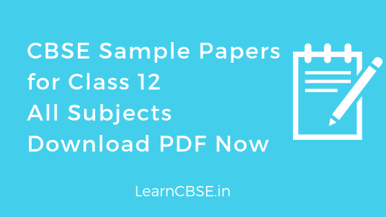

CBSE Sample Papers for Class 12 with Marking Scheme and Solutions PDF Download for 2020 Exams
CBSE Class 12 Sample Papers are provided hereby LearnCBSE for students to make them prepare for their final board exams. These sample papers are designed by our subject experts and as per the latest syllabus(2019-20). All the sample papers are prepared in PDF format, so that students can easily download them and practice offline as well. These sample papers are available here for Physics, Chemistry, Maths and Biology subjects.
| Subject | Sample Question Paper | Marking Scheme |
|---|---|---|
| CBSE Sample Paper for Class 12 Accountancy | SQP | MS |
| CBSE Sample Paper for Class 12 Arabic | SQP | MS |
| CBSE Sample Paper for Class 12 Assamese | SQP | MS |
| CBSE Sample Paper for Class 12 Bengali | SQP | MS |
| CBSE Sample Paper for Class 12 Bhutia | SQP | MS |
| CBSE Sample Paper for Class 12 Biology | SQP | MS |
| CBSE Sample Paper for Class 12 Biotechnology | SQP | MS |
| CBSE Sample Paper for Class 12 Bodo | SQP | MS |
| CBSE Sample Paper for Class 12 Business Studies | SQP | MS |
| CBSE Sample Paper for Class 12 Carnatic Melodic | SQP | MS |
| CBSE Sample Paper for Class 12 Carnatic Percussion | SQP | MS |
| CBSE Sample Paper for Class 12 Carnatic Vocal | SQP | MS |
| CBSE Sample Paper for Class 12 Commercial Art | SQP | MS |
| CBSE Sample Paper for Class 12 Chemistry | SQP | MS |
| CBSE Sample Paper for Class 12 Computer Science – New | SQP | MS |
| CBSE Sample Paper for Class 12 Computer Science – Old | SQP | MS |
| CBSE Sample Paper for Class 12 Dance Manipuri | SQP | MS |
| CBSE Sample Paper for Class 12 Economics | SQP | MS |
| CBSE Sample Paper for Class 12 Engg. Graphic | SQP | MS |
| CBSE Sample Paper for Class 12 Entrepreneurship | SQP | MS |
| CBSE Sample Paper for Class 12 French | SQP | MS |
| CBSE Sample Paper for Class 12 Geography | SQP | MS |
| CBSE Sample Paper for Class 12 German | SQP | MS |
| CBSE Sample Paper for Class 12 Gujarati | SQP | MS |
| CBSE Sample Paper for Class 12 Hindi Aichhik | SQP | MS |
| CBSE Sample Paper for Class 12 Hindi Adhaar | SQP | MS |
| CBSE Sample Paper for Class 12 History | SQP | MS |
| CBSE Sample Paper for Class 12 Hindustani Music (Melodic) | SQP | MS |
| CBSE Sample Paper for Class 12 Hindustani Music (Percussion) | SQP | MS |
| CBSE Sample Paper for Class 12 Hindustani Music (Vocal) | SQP | MS |
| CBSE Sample Paper for Class 12 Home Science | SQP | MS |
| CBSE Sample Paper for Class 12 Informatics Practices – New | SQP | MS |
| CBSE Sample Paper for Class 12 Informatics Practices – Old | SQP | MS |
| CBSE Sample Paper for Class 12 Japanese | SQP | MS |
| CBSE Sample Paper for Class 12 Kannada | SQP | MS |
| CBSE Sample Paper for Class 12 Kashmiri | SQP | MS |
| CBSE Sample Paper for Class 12 Legal Studies | SQP | MS |
| CBSE Sample Paper for Class 12 Lepcha | SQP | MS |
| CBSE Sample Paper for Class 12 Limboo | SQP | MS |
| CBSE Sample Paper for Class 12 Malayalam | SQP | MS |
| CBSE Sample Paper for Class 12 Marathi | SQP | MS |
| CBSE Sample Paper for Class 12 Mathematics | SQP | MS |
| CBSE Sample Paper for Class 12 Mizo | SQP | MS |
| CBSE Sample Paper for Class 12 Manipuri | SQP | MS |
| CBSE Sample Paper for Class 12 NCC | SQP | MS |
| CBSE Sample Paper for Class 12 Nepali | SQP | MS |
| CBSE Sample Paper for Class 12 Odia | SQP | MS |
| CBSE Sample Paper for Class 12 Painting | SQP | MS |
| CBSE Sample Paper for Class 12 Graphic | SQP | MS |
| CBSE Sample Paper for Class 12 Sculpture | SQP | MS |
| CBSE Sample Paper for Class 12 Persian | SQP | MS |
| CBSE Sample Paper for Class 12 Physical Education | SQP | MS |
| CBSE Sample Paper for Class 12 Physics | SQP | MS |
| CBSE Sample Paper for Class 12 Pol. Science | SQP | MS |
| CBSE Sample Paper for Class 12 Psychology | SQP | MS |
| CBSE Sample Paper for Class 12 Punjabi | SQP | MS |
| CBSE Sample Paper for Class 12 Russian | SQP | MS |
| CBSE Sample Paper for Class 12 Sindhi | SQP | MS |
| CBSE Sample Paper for Class 12 Sociology | SQP | MS |
| CBSE Sample Paper for Class 12 Spanish | SQP | MS |
| CBSE Sample Paper for Class 12 English Core | SQP | MS |
| CBSE Sample Paper for Class 12 English Elective | SQP | MS |
| CBSE Sample Paper for Class 12 Sanskrit Core | SQP | MS |
| CBSE Sample Paper for Class 12 Sanskrit Elective | SQP | MS |
| CBSE Sample Paper for Class 12 Tamil | SQP | MS |
| CBSE Sample Paper for Class 12 Tangkhul | SQP | MS |
| CBSE Sample Paper for Class 12 Telangana Telugu | SQP | MS |
| CBSE Sample Paper for Class 12 Telugu | SQP | MS |
| CBSE Sample Paper for Class 12 Tibetan | SQP | MS |
| CBSE Sample Paper for Class 12 Urdu Core | SQP | MS |
| CBSE Sample Paper for Class 12 Urdu Elective | SQP | MS |
CBSE Class 12 Board Paper 2020 Solutions for All Subjects
| Subject | Download |
| 1. Accountancy | Click Here |
| 2. Mathematics | Click Here |
| 3. Physics | Click Here |
| 4. Chemistry | Click Here |
| 5. Biology | Click Here |
| 6. Economics | Click Here |
| 7. History | Click Here |
| 8. Political Science | Click Here |
| 9. Entrepreneurship | Click Here |
| 10. Physical Education | Click Here |
| 11. English Core | Click Here |
Sample papers are one of the best resources for students to prepare for exams. These helps students to get a prior experience before they attempt for final exam. Also, they will know if they are prepared for the exam completely or not. They can test their knowledge for all these subjects and get confident about the answers. If any discrepancies occur in the written answers, they can focus more on such questions, so that there is no mistakes happening in the final paper. They can also mark themselves for correct and wrong answers.
CBSE Sample Papers for Class 12 Consist of 500+ Question Papers (80 Subjects). Download Latest CBSE Sample Papers for all subjects from LearnCBSE.in at Free of Cost.
CBSE Sample Papers for Class 12 Sciences 2019-2020
Getting the good score in CBSE Class 12 Science will help you get into your dream colleges. LearnCBSE.in provides CBSE Class 12 Science Sample Papers which helps students to gain confidence to face any type of question asked in the board exam. Class 12 Sample Papers designed by subject experts for self-evaluation.
CBSE Sample Papers for Class 12 touch on all the subjects which a science batch student must learn. Science Stream students required lots of practice, hence we provided Latest cbse.nic.in sample question papers and solved papers for all subjects. These covers Maths, physics, Chemistry, Biology, English, Hindi, Computer Science and many more.
- Maths Sample Papers for Class 12 2019
- Physics Sample Papers for Class 12 2019
- Chemistry Sample Papers for Class 12 2019
- Biology Sample Papers for Class 12 2019
- English (Core and Elective) Sample Papers for Class 12 2019
- Biotechnology Sample Papers for Class 12 2019
- Computer Science Sample Papers for Class 12 2019
- Hindi (Core and Elective) Sample Papers for Class 12 2019
- Engineering graphics Sample Papers for Class 12 2019

CBSE Previous Year Question Papers for Class 12 – All subjects
CBSE Sample Papers for Class 12 Humanities 2019
- Business Studies (BST) Sample Papers for Class 12 2019
- Accountancy Sample Papers for Class 12 2019
- Economics Sample Papers for Class 12 2019
- Geography Sample Papers for Class 12 2019
- History Sample Papers for Class 12 2019
- Home Science Sample Papers for Class 12 2019
- Psychology Sample Papers for Class 12 2019
- Political Science Sample Papers for Class 12 2019
- Sociology Sample Papers for Class 12 2019
- Human Right and Gender Studies Sample Papers for Class 12 2019
- Information Practices Sample Papers for Class 12 2019
CBSE Sample Papers for Class 12 Languages 2019
- Bengali
- Sanskrit (Elective and Core)
- Arabic
- French
- German
- Japanese
- Urdu (Core and Elective)
- Punjabi
- Bodo
- Bhutia
- Kannada
- Lepcha
- Lim boo
- Malayalam
- Nepali
- Odia
- Telugu
- Russian
- Assamese
- Tangkhul
- Tamil
- Spanish
- Persian
CBSE Sample Papers for Class 12 Other Subjects 2019
- Agriculture
- Carnatic Music
- Physical Education
- Philosophy Sample Paper 1
- Philosophy Sample Paper 2
- Entrepreneurship
- Fashion Studies
- Heritage Craft
- Graphic Design
- Legal Studie
- Mass Media Studies (Elective)
- Theatre Studies
- NCC
- Commercial Arts
- Graphics – History of Indian Art
- Painting – History of Indian Art
CBSE Class 12 Dance Sample Papers cbse.nic.in 2019
- Bharatnatyam Class 12 Sample Papers 2017 – 2018
- Bharatnatyam Class 12 Sample Papers 2016 – 2017
- Sample Paper Class 12 Kuchipudi 2018 – 2019
- Sample Paper Class 12 Kuchipudi 2017 – 2018
- Manipuri Class 12 Sample Papers
- Mohiniattam Class 12 Sample Paper 2018 – 2019
- Class 12 Mohiniattam Sample Paper 2017 – 2018
- Sample Paper for Class 12 Mohiniattam 2015 – 2016
- Odissi Class 12 Sample Papers
- Kathak Sample Papers
Class 12 Music Hindustani Sample Papers 2019
Class 12 Sample Papers Multimedia and Web Technology
- Multimedia and Web Technology Sample Paper 2014 – 2015
- Sample Paper Class 12 Multimedia and Web Technology Sample Paper 2015
CBSE Class 12 Sample Papers – Sculpture
- Sculpture – History of Indian Art Class 12 Marking Scheme 2017 – 2018
- Sample Papers for Class 12 Sculpture – History of Indian Art 2017 – 2018
- Sculpture – History of Indian Art Class 12 Sample Papers 2016 – 2017
CBSE Sample Papers for Class 12 Tibetan
- Class 12 Tibetan Sample Question Paper 2018 – 2019
- Tibetan Sample Paper 2017 – 2018
- Sample Question paper Tibetan 2016 – 2017
More Resources for CBSE Class 12